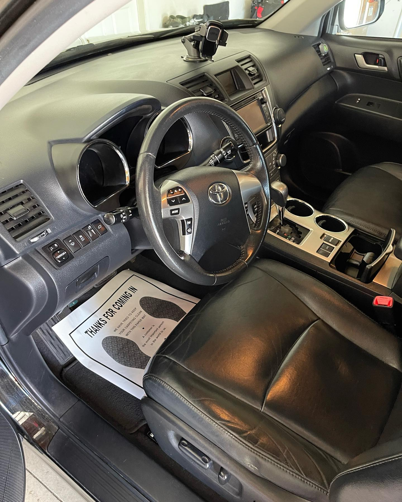
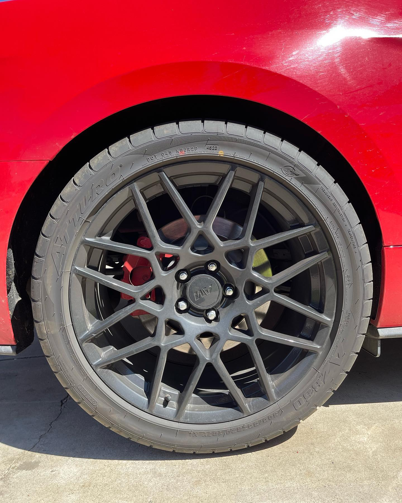
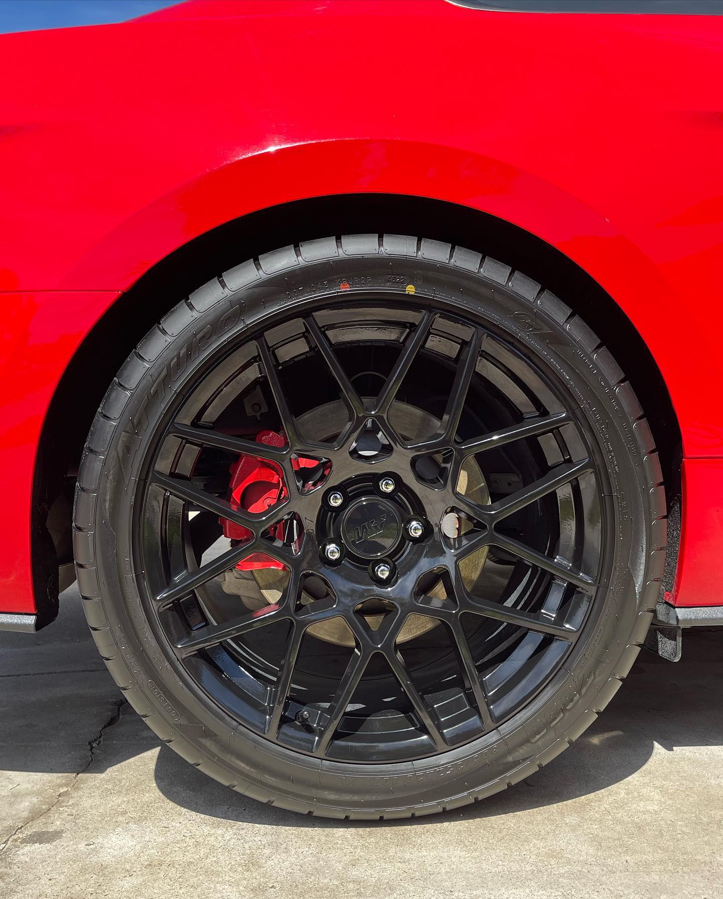
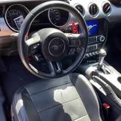
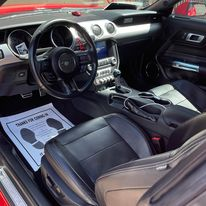

.jpg)
Unleashing the Potential of Auto Detailing
Customers like to ask what separates us from our competitors, and the answer is we prioritize and value the detailing of your ride (your service) as our #1 priority. Toro's auto detailing specialist are the #1 detailing company in southern california. We specialize in all aspects of car cleaning that includes: exterior and interior car wash, claying, ceramic coating, polishing, waxing, tire shine and interior fabric and leather treatments.

What you'll get!
- Extensive wash interior and exterior
- Waxing/Ceramic coating
- Claying/Claybar treatment
- Fabric/Leather treatments to keep your seats looking new
- 100% satisfaction guaranteed!

Services
Interior
Our team is ready to tackle your cars interior detail, we prioritize in giving your interior a sleek and crisp cleaning and polishing look. For the best car leather seat care, we have you covered. From our top notch materials to the professionalism we provide, no one in the Inland Empire beats Toro's when it comes to conditioning and cleaning your interior.
Ideal for maintaining the cleanliness and condition of leather car seats, this product is specifically designed to effectively remove dirt, grime, and stains without causing any damage to the material. Its gentle yet powerful formula ensures that the leather is thoroughly cleaned and restored to its original luster, leaving behind a fresh and rejuvenated appearance. This product is the perfect choice for those who want to keep their car interior looking pristine and well-maintained.
Exterior
Now here comes the fun part, have you ever noticed people staring at your car as you drive by? compliment on your vehicle? We would happily make this a more often occurance, when you book a detail service with our company
Achieve the ultimate in exterior cleanliness and shine with our top-of-the-line products. The ultimate exterior cleaning and shining service is designed to provide your property with a pristine and polished appearance. Our team of experts is dedicated to ensuring that every inch of your exterior surfaces, from windows to siding, is thoroughly cleaned and buffed to perfection. We use top-of-the-line equipment and eco-friendly cleaning solutions to remove dirt, grime, and other build-up, leaving your exterior looking brand new.
Polishing
Experience and solid hands grip and smooth out any blemishes and streaks that are visible, leaving a shine unmatched by any other detail service
Refinishing process involves the application of a specialized treatment to enhance the appearance and smoothness of a surface. This treatment is designed to remove imperfections and blemishes, resulting in a polished and refined finish. The process typically includes the use of abrasive materials and compounds to gently buff and smooth the surface, followed by a final polishing step to achieve a high-gloss shine. This treatment can be applied to a variety of materials, including metal, wood, and stone, and is commonly used in the restoration of furniture, automotive parts, and architectural elements. The refinishing treatment is a meticulous and precise process that requires skill and expertise to achieve optimal results. It begins with the careful preparation of the surface, including cleaning and smoothing any rough or uneven areas. The application of the polishing treatment is then carried out with precision, ensuring that each area is treated evenly and thoroughly. The final result is a surface that is not only visually appealing but also smooth to the touch, with a lustrous sheen that enhances the overall aesthetic. This treatment is an essential part of the restoration and maintenance of various surfaces, providing a durable and attractive finish that can greatly enhance the appearance and value of the material.
Ceramic Coating
We definitley take you our ceramic coating seriously, We use a specialized chemical polymer that is applied to the exterior that prevents any external damage to the paint of your vehicle
A specialized treatment for vehicles involving the application of a protective ceramic coating. This process aims to provide a durable layer of protection to the exterior of the car, shielding it from various environmental factors such as UV rays, dirt, and water spots. The ceramic coating is designed to enhance the gloss and shine of the vehicle's paintwork, giving it a sleek and polished appearance. This treatment is popular among car enthusiasts and owners who want to maintain the aesthetic appeal of their vehicles while ensuring long-lasting protection against damage and wear.
Waxing
The best waxing job you'll ever see! Our specialists use a wax substance called 'turtle wax' that is applied to the exterior and prevents fading, peeled, or damaged paint and is know to protect against snow and slush
When it comes to caring for your vehicle, consider the application of a wax treatment to protect and enhance the appearance of the car's exterior. This process involves the use of a specialized wax product that is applied to the surface of the car and then buffed to create a protective layer. This layer helps to shield the paint from environmental elements such as UV rays, dirt, and debris, while also providing a glossy finish that can make the car look brand new. The waxing car treatment is a crucial step in maintaining the overall condition and value of your vehicle. By regularly waxing your car, you can ensure that the paint remains vibrant and free from damage caused by exposure to the sun and other harmful substances. Additionally, the smooth and shiny surface created by the wax treatment can make it easier to clean the car and maintain its appearance for a longer period of time. Overall, the waxing car treatment is a simple yet effective way to keep your vehicle looking its best while also protecting it from the elements.
Fabric/Leather treatments
Using some of the trusted sprays and cleaners for both fabrics and leather seats, You could imagine being in the car for the first time
When it comes to caring for your car seats, it's important to give them the proper treatment to ensure they stay in good condition for as long as possible. Whether your car seats are made of fabric or leather, there are specific treatments and products designed to keep them clean, protected, and looking like new. For fabric car seats, it's essential to use a gentle cleaner that is specifically formulated for upholstery, as well as a fabric protector to help repel stains and spills. Regular vacuuming and spot cleaning can also help maintain the appearance of fabric seats. On the other hand, leather car seats require a different approach. Using a leather cleaner and conditioner can help keep the leather soft, supple, and free from cracks. It's also important to protect leather seats from harmful UV rays and prevent them from drying out.
Check out our work!
2015 Ford Mustang Wheel Polish
Before

After

2015 Ford Mustang Interior Treatment
Before

After

Why choose us?
Toro's thrives on precision auto detailing, taking every detail job seriously to insure the brightest of finishes to your vehicle, your satisfaction is our priority, take a moment and appreciate the look of your interior when we add our special treatments retoring the color, look, and feel of your fabric or leather seats, Let us take care of your car cleaning needs, while you enjoy the the best detail finish!
Toro's Detailing IE
Call or Text: (951) 345-6789
Email: torosdetailie@gmail.com
We are located in Perris and serve all of sorrounding areas: Menifee, Murrieta, Temecula, Winchester